Poster
A small overview of the project. Full background, discussion and limitations are in the poster PDF.
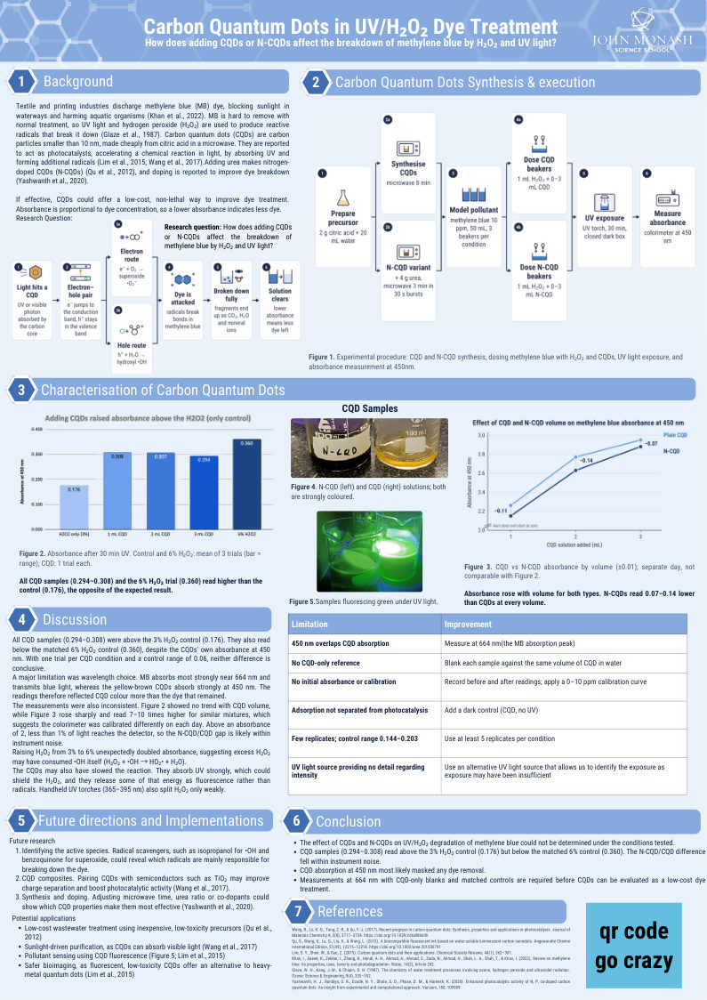
Open full poster (PDF)Research question
Whether cheap, microwave-made carbon dots (plain and nitrogen-doped) speed up UV/H₂O₂ breakdown of a textile dye.
Results
CQD samples read higher absorbance (0.29–0.31) than the H₂O₂-only control (0.18), the opposite of what we expected.
Main takeaway
The CQDs' own colour at 450 nm masked the dye. Next time: measure at 664 nm with CQD-only blanks.
Lab work
Detailed steps + observations
1Making the carbon dots
2 g citric acid dissolved in 20 mL water, then microwaved for 8 minutes.
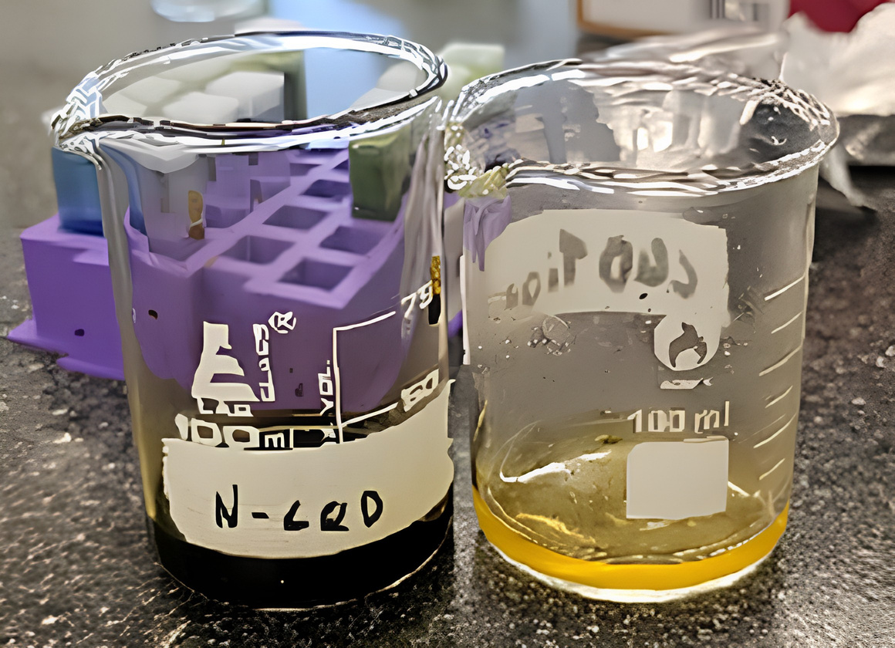
2The nitrogen-doped batch
Same recipe plus 4 g urea, microwaved in 30-second bursts for 3 minutes. The result (left) was much darker than plain CQDs (right).
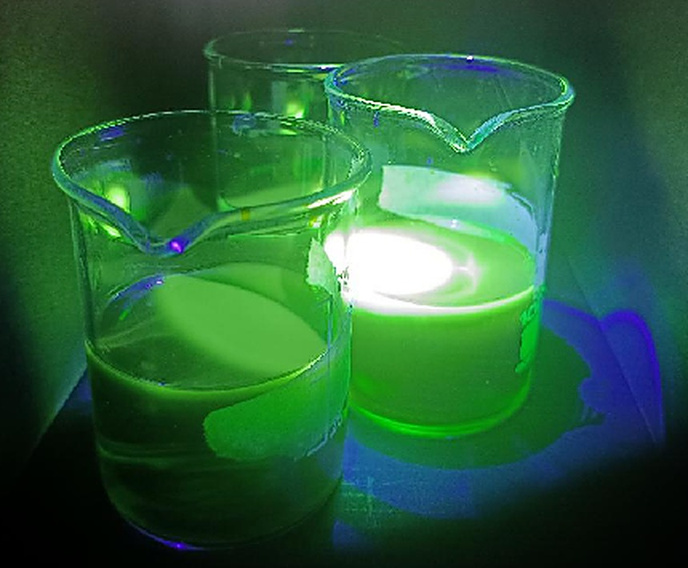
3Checking they glow
Under a UV torch the samples fluoresced bright green, a sign that carbon dots had formed.
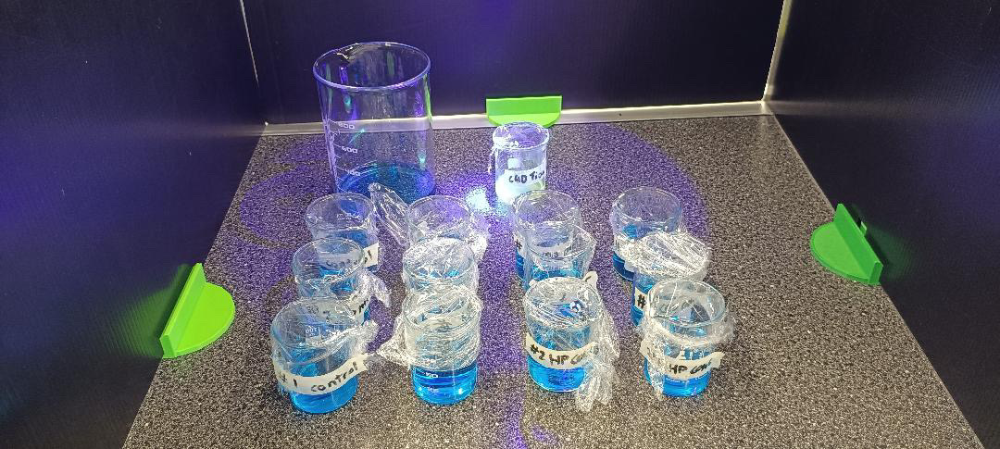
4Dosing the dye
50 mL of 10 ppm methylene blue per beaker, with 1 mL H₂O₂ and 0–3 mL of CQD or N-CQD solution.
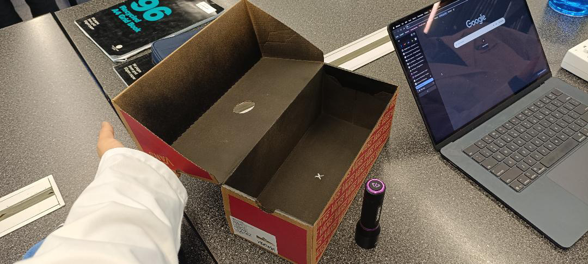
530 minutes under UV
Each beaker sat under a handheld UV torch inside a closed dark box for 30 minutes.
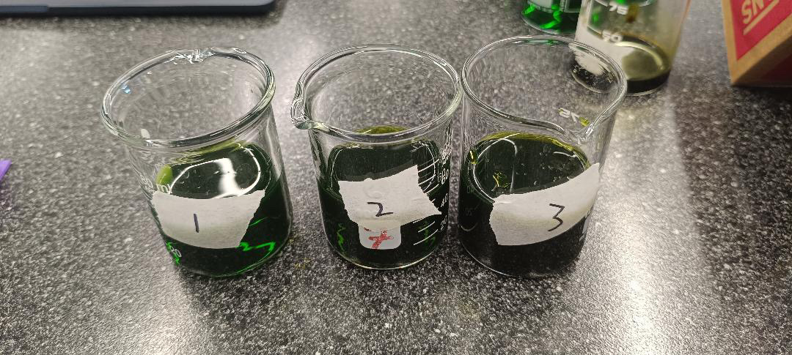
6Measuring absorbance
A colorimeter read absorbance on six colour channels from 450 to 650 nm. Methylene blue shows up best on the 650 nm (red) channel, closest to its 664 nm peak (see the Colour fingerprint chart).
See it in 3D
An interactive model of a carbon quantum dot, an animation of its layers, and a one-minute video on how CQDs break down dye.
Inside a CQD
How CQDs clean dye-polluted water
Data
How much methylene blue was removed after 30 min UV
Description
Percent of methylene blue removed, from the 650 nm reading and corrected for dilution by the added H₂O₂ and CQD. Whiskers = ±1 SD of 3 repeats; the 1–3 mL CQD beakers were single trials.
Explanation
H₂O₂ and UV alone removed about half the dye (51%). With plain CQDs added, only 10–12% was removed, and with 6% H₂O₂ plus CQD there was no measurable removal. Under these conditions the CQDs seem to have slowed the breakdown.
Which colours each sample absorbs
Description
Absorbance on the colorimeter's six colour channels (450–650 nm) for three samples.
Explanation
Methylene blue absorbs most at the red end (650 nm), and the plain-CQD sample looks almost the same as the dye alone. The N-CQD sample absorbs strongly at 450 nm (violet), so that channel mostly tracks the N-CQDs, not the dye.
N-CQD beakers before and after 30 min UV
Description
Three beakers of methylene blue + 3% H₂O₂ + 1 mL N-CQD, each measured at 650 nm before and after UV (14 Oct).
Explanation
Mean absorbance rose slightly, from 0.739 to 0.761, so no dye was removed. Repeat 1 read high after UV on every channel, possibly from a bubble or smudge.
How much light reaches the detector
Description
Absorbance is logarithmic: % light transmitted = 100 × 10−A. All experimental readings are plotted along this curve, on the 450 nm and 650 nm channels.
Explanation
Eight of the twelve N-CQD readings at 450 nm exceed A = 2, meaning less than 1% of light reaches the detector. At this threshold, background noise dominates the signal, making small differences between these readings (like the 0.07–0.14 gap in poster Figure 3) statistically unreliable. At 650 nm, every reading stays below 1.2.
Adding CQDs raised absorbance above the H₂O₂-only control
Description
Absorbance at 650 nm after 30 min UV. Bars = mean, dots = individual beakers. Grey = no CQD.
Discussion of this result is in poster section 4.
N-CQD amount: before and after 30 min UV
Description
1, 2 and 3 mL N-CQD in methylene blue, measured on the 450 nm (violet) channel before H₂O₂ was added and after 30 min UV (15 Oct). Axis does not start at zero.
Explanation
After UV, readings were 0.07–0.14 lower. All six readings are above A = 2, where less than 1% of light reaches the detector, so this gap may just be instrument noise.
After-UV values are read off the colorimeter screenshot in the prac log (±0.01).
Raw data
Download all 216 readings (CSV)Mean absorbance at 650 nm for each beaker. The CSV has every reading on all six colour channels.
| Date | Trial | Condition | Rep 1 | Rep 2 | Rep 3 | Mean | Dye removed |
|---|
Colorimeter screenshots
Raw SPARKvue graphs from the prac log, showing absorbance over time for each sample. Tap to enlarge.
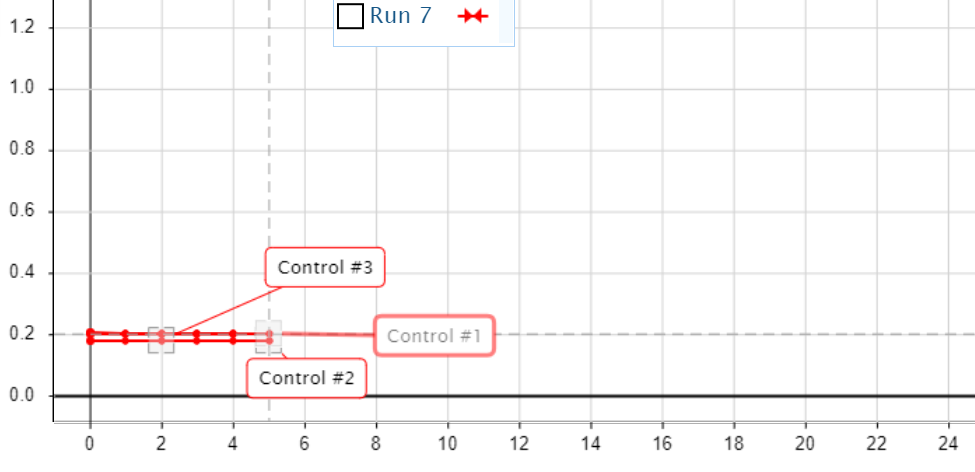
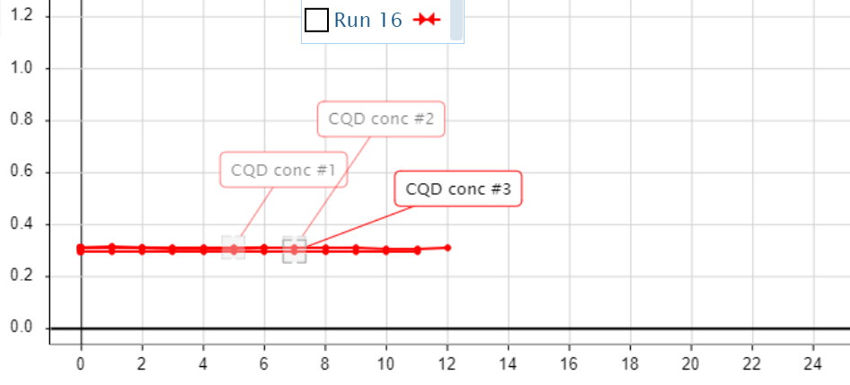
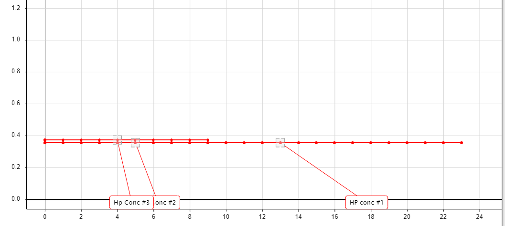
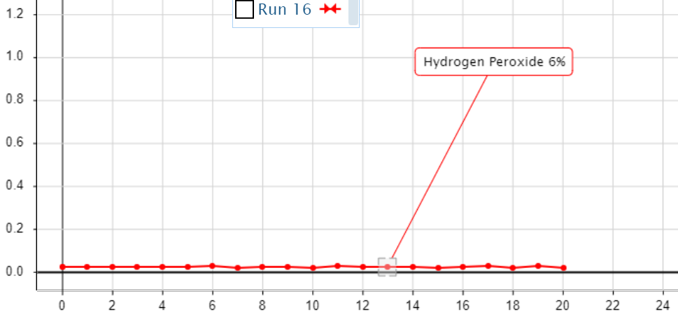
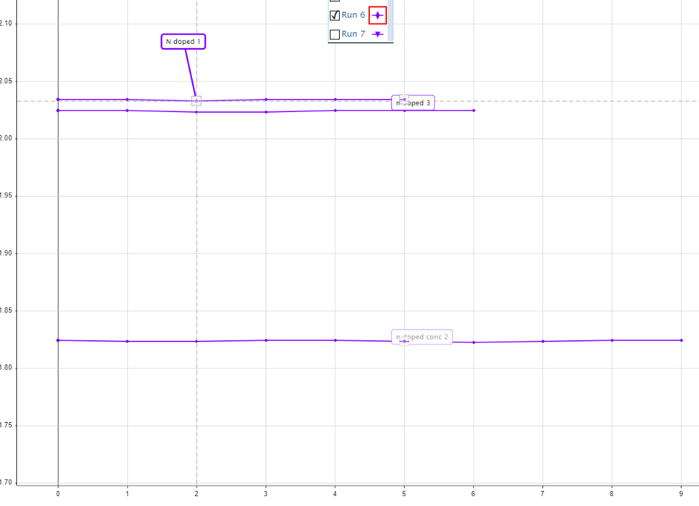
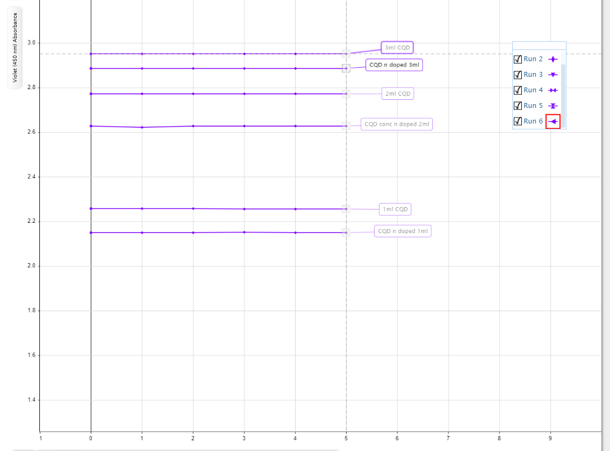
Contact
Feel free to email us for any questions or collaboration.
References
- Glaze, W. H., Kang, J.-W., & Chapin, D. H. (1987). The chemistry of water treatment processes involving ozone, hydrogen peroxide and ultraviolet radiation. Ozone: Science & Engineering, 9(4), 335–352.
- Khan, I., Saeed, K., Zekker, I., Zhang, B., Hendi, A. H., Ahmad, A., Ahmad, S., Zada, N., Ahmad, H., Shah, L. A., Shah, T., & Khan, I. (2022). Review on methylene blue: Its properties, uses, toxicity and photodegradation. Water, 14(2), Article 242.
- Lim, S. Y., Shen, W., & Gao, Z. (2015). Carbon quantum dots and their applications. Chemical Society Reviews, 44(1), 362–381.
- Qu, S., Wang, X., Lu, Q., Liu, X., & Wang, L. (2012). A biocompatible fluorescent ink based on water-soluble luminescent carbon nanodots. Angewandte Chemie International Edition, 51(49), 12215–12218. doi.org/10.1002/anie.201206791
- Wang, R., Lu, K.-Q., Tang, Z.-R., & Xu, Y.-J. (2017). Recent progress in carbon quantum dots: Synthesis, properties and applications in photocatalysis. Journal of Materials Chemistry A, 5(8), 3717–3734. doi.org/10.1039/c6ta08660h
- Yashwanth, H. J., Rondiya, S. R., Dzade, N. Y., Dhole, S. D., Phase, D. M., & Hareesh, K. (2020). Enhanced photocatalytic activity of N, P, co-doped carbon quantum dots: An insight from experimental and computational approach. Vacuum, 180, 109589.